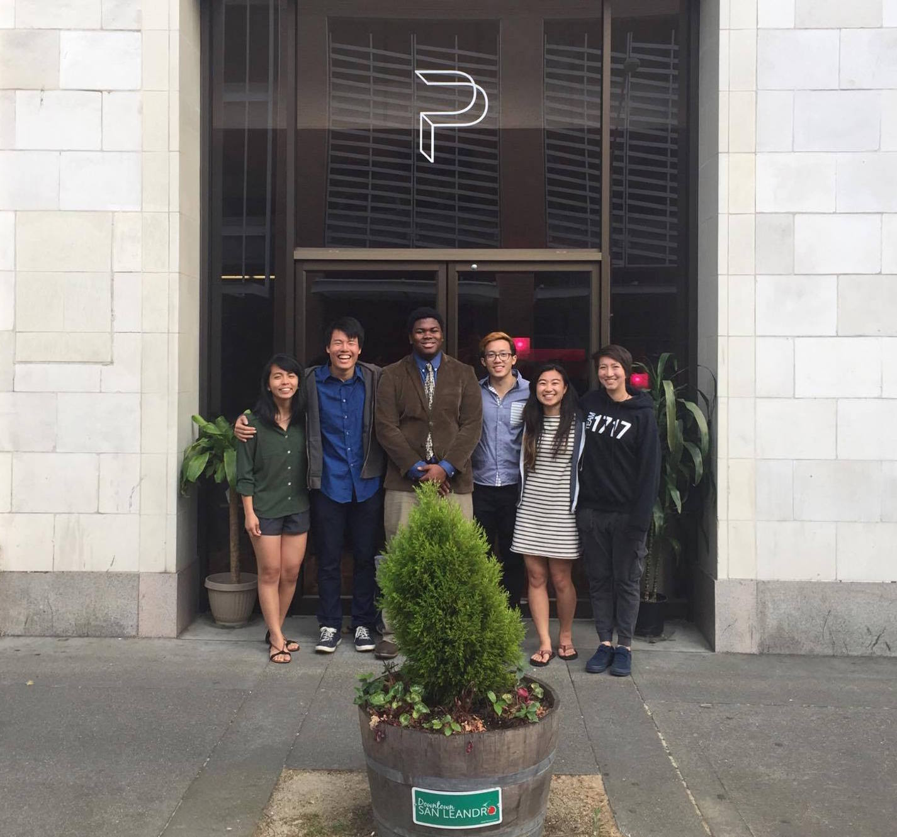

This website was created to extensively document the endeavors of Priscilla Chu, Herrick Fang, Darien Joso, Sati Smyth, Elijah Whitsett, and Kayla Yamada during their time in the San Leandro Pilot City Incubator Program.
San Leandro is building itself to be a pilot city that others can look to as a model for growth and development. Thus, the city is constantly searching for optimal solutions to the various obstacles it may face. Our specific project deals primarily with expanding and optimizing waste management in downtown San Leandro. Currently there are 20 trashcans in the downtown area--the city is planning to not only upgrade these trash cans, but also introduce at least 20 more. This sudden growth will create a labor DEFICIENCY, and necessitate the redistribution of funds from other vital departments.
Our solution is to leverage existing technologies to minimize the additional labor necessitated by this updated trash system. We intend for this solution to be available as a model for other cities to improve their own waste management systems.
We will connect sensor modules to monitor the levels of trash in these new trashcans and display this information on a website that workers can easily access. This webpage will allow the workers to quickly service the necessary trashcans without excessive labor. The sensor modules will connect to the city's 6LoWPAN network for further optimization. This network allows us to transmit information with much lower power and cost requirements than traditional forms of communication (such as WiFi or cellular networks). The data from the sensor modules can then be displayed on the webpage.
